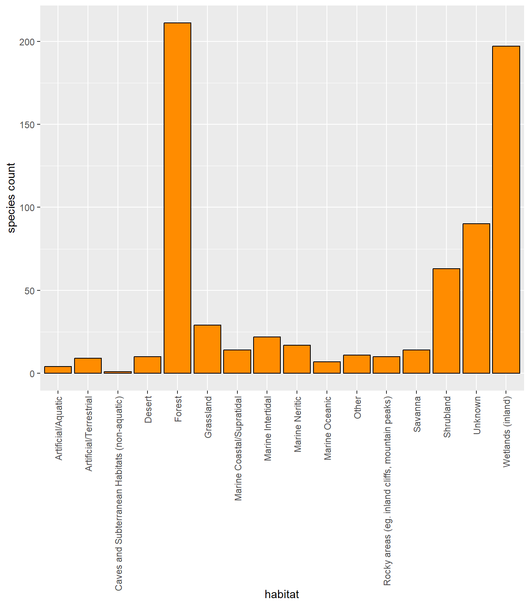
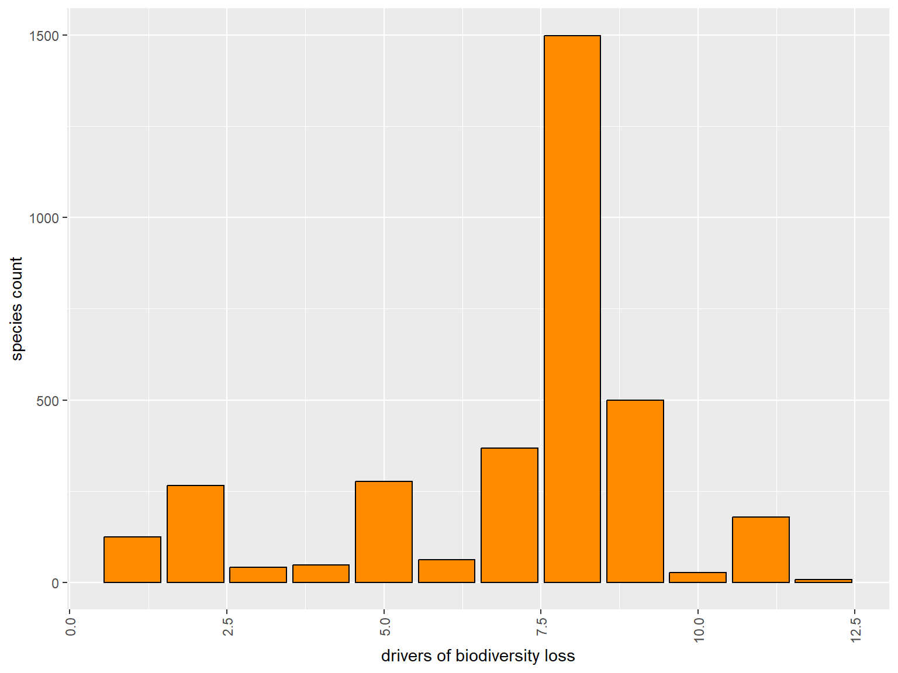

Learning Objectives
After completing this activity you should be able to
ggplot.For each of our modules we will have a project-folder with an Rproject, *.Rmd-files, and sub-directories for data, scripts, and results as described in our Rproject Tutorial. You should have create a directory on your Desktop or in your Documents folder on your laptop (suggested name was BI328) as a home directory for all of our project folders this semester.
Download the IUCN project folder. Once you have downloaded it, unzip the project directory into your BI449 directory14 Macs now typically unzip folder for you, so you would be able to skip this step. You can open the Rproj for this module either by double clicking on it which will launch Rstudio or by opening Rstudio and then using File > Open Project or by clicking on the Rproject icon in the top right of your program window and selecting Open Project.
Once you have opened a project you should see the project name in the top right corner15 Pro tip: If you run into issues where an Rmarkdown won’t render or file paths aren’t working (especially if things were working previously) one of your first steps should be to double check that the correct Rproj is loaded.
You should have a IUCN.Rmd in your project directory. Use that file to work through this tutorial - you will submit in your rendered (“knitted”) html-file as your homework assignment through Canvas. So, first thing in the YAML header, change the author to your name. You will use this Rmarkdown file to record your answers.
Before we get started load the R packags we will need to run our analysis, these should already be installed on your laptop.
library(tidyverse)
library(janitor)
library(knitr)Before lab you should have read and annotated Mace et al. (2008) Quantification of Extinction Risk: IUCN’s System for Classifying Threatened Species which provides an overview of the system for quantifying species’ risk levels and the criteria used for evaluation.
The IUCN Redlist is “the world’s most comprehensive inventory of global conservation status of plant and animal species”. It is maintained by the International Union for Conservation of Nature (IUCN) which is comprises both government and civil society organizations with a focus of understanding biodiversity and the measures needed to safeguard it.
The goal of the IUCN Redlist is to assess the status of individual species to create a barometer of the overall health of the world’s biodiversity with the intent guide scientific research, inform policy/conventions (e.g. listing of species), affect resource allocation, and inform conservation planning, management strategies, and improve decision making.
► Question 30
Go to the IUCN redlist website and record the proportion of various taxonomic groups (based on the number of assessed species) that are currently threatened with extinction. Briefly discuss whether these numbers are higher or lower than you would have expected.
The IUCN Red List has nine categories to classify species’ risk of global extinction.
► Question 31
Use the IUCN Redlist website to identify and briefly characterize these nine categories. Indicate which categories indicate whether or not species have been evaluated, have sufficient information to make an assessment, and are frequently grouped and collectively referred to as threatened.
Five criteria are used for assessment an classification of species:
► Question 32
The IUCN Redlist is at times criticized in the primary literature and debated in some scientific venues. Use the background information from your reading and refer to your textbook (Ch. 8) to briefly outline the issues and argue whether you think these are substantial issues that need to be addressed and how that could be achieved.
Value systems for biodiversity range from ethical and cultural/relational to ecological and economic systems. With a growing number of species being threatened, endangered, or going extinct it is important to consider the value of biodiversity and what irreversible loss will mean for the ecosystems they exist in, the economy, and human well-being in the broadest sense.
One way to categorize species in terms of value is as (1) Direct Use Value and (2) Indirect Use Value.
► Question 33
Briefly define each of these two categories and list specific examples for each.
Two categories of Indirect Use Value are Ecological Value and Cultural/Spiritual Value (this latter category corresponds with our concept of relational value).
► Question 34
Briefly describe each of these two categories and list specific examples for each.
Being able to define the value of species is important because it allows us to assess what would be lost if a species went extinct and how this would affect their ecosystem and/or human well-being.
Go to the IUCN Redlist Search Page and identify one species each that is endangered or critically endangered in New Hampshire16 Sub in your home state or a state you’re willing to claim as home if you’d like, in another part of the USA, and outside of the US that has a direct use.
An easy way to do this is to use the drop-down menus on the left-hand side of the webpage. Open the Red List Category panel and check the boxes for vulnerable, endangered and critically endangered. Then use the Land Regions section to narrow your search to New Hampshire, USA and another part of the world to make your selections. This will likely be a long list - you can use e.g the Systems section to restrict your search to marine, terrestrial, or freshwater systems or the Taxonomy panel to look at specific groups of animal or plants. Finally, the Use and Trade panel will allow you to narrow your search to organisms with direct use value17 For easy comparison, you may want to choose three species that share the same direct use value..
► Question 35
For each of the three species you selected pull up the page with their assessment; give a brief synopsis of the name, range, habitat/ecology, major threats, and direct use value. For each consider what the ecological value and/or cultural/spiritual value could be. Finally, describe the broad-scale effects of this species going extinct would be (use the value categories we have discussed in lecture) and argue whether you think significant efforts should be made to protect the species. Feel free to work with a partner, however you should write your own comparison. Be prepared to share your comparison with the class!
For our course we are grouping drivers of biodiversity loss (threats) into five broad categories.
Open the IUCN Redlist Search Page again and open the Threats panel/section. You should see twelve categories. Go to the detailed description of these categories.
► Question 36
Read over the groups of threats the IUCN Redlist uses to describe the mechanisms that are affecting individual species and organize them into the five broad categories listed above.
► Question 37
At the bottom of this detailed descriptions of these categories you should find descriptions of the timing, scope, and severity options. Briefly describe how these are asssessed (categories) and explain why it is important to consider these categories/perspectives as well to better assess what the IUCN redlist status of each species is.
We are going to use the IUCN Redlist database to compare the distribution of threat levels and threats to biodiversity for different geographic regions. We will also determine if there are differences among taxonomic groups, habitats, and broad ecosystem categories.
We are going to directly query the IUCN redlist database using R. To do this we need to install an R package19 You only have to do this once..
install.packages("rredlist")Now we can load the library and query and download information from the database. To do this you need an API key, I have obtained one for use in our class and will share it with you during lab so you can include it in the code.
Let’s query information on a species we are interested in - choose a species you are interested in and store it’s scientific name as the species variable to query information20 If you have the website still open you might want to intentionally choose a species that has been evaluated and is threatened - your results will be more interesting..
Instead of directly adding the key or species name into the function we are storing them as objects (in this case a string). This makes it easier to make changes without having to go through the function to find the correct argument to change.
# set species
sp <- "Propithecus verreauxi"
# download threat category information for a certain species
download <- rl_search(sp, key = rlkey)
# get dataframe with results
redlist_status <- download[["result"]]You can use the function colnames() to query the column names for any dataframe.
colnames(redlist_status)## [1] "taxonid" "scientific_name" "kingdom" "phylum"
## [5] "class" "order" "family" "genus"
## [9] "main_common_name" "authority" "published_year" "assessment_date"
## [13] "category" "criteria" "population_trend" "marine_system"
## [17] "freshwater_system" "terrestrial_system" "assessor" "reviewer"
## [21] "aoo_km2" "eoo_km2" "elevation_upper" "elevation_lower"
## [25] "depth_upper" "depth_lower" "errata_flag" "errata_reason"
## [29] "amended_flag" "amended_reason"► Question 38
Take a look at the column names to get an idea of the type of information you can get from this dataframe (you may also want to pull up the dataframe itself in the view panel to be able to see the contents of each column).
You can also download information on the main threats for each species.
# download threat category information for a certain species
download <- rl_threats(sp, key = rlkey)
redlist_threats <- download[["result"]] %>%
mutate(species = sp)► Question 39
Take a look at the column names and dataframe content and assess the information you can get about the threats to this species.
Details on the groups from the threat categories can be found here.
Similarly, instead of using the web page to get more detailed information you can directly query the database to get information on the species’ habitat -
The downloaded information is stored as a list with two elements. The first is a string (\(name) of the species scientific name while the second element (\)result) contains a dataframe with the actual information being queried.
# habitats by taxon name, IUCN id, and region
rl_habitats(name = sp, key = rlkey)## $name
## [1] "Propithecus verreauxi"
##
## $result
## code habitat suitability season majorimportance
## 1 1.5 Forest - Subtropical/Tropical Dry Suitable Resident Yes
## 2 1.6 Forest - Subtropical/Tropical Moist Lowland Suitable Resident Yes
## 3 3.5 Shrubland - Subtropical/Tropical Dry Suitable Resident YesConservation measures -
# species conservation measures
rl_measures(name = sp, key = rlkey)## $name
## [1] "Propithecus verreauxi"
##
## $result
## code title
## 1 2.1 Site/area management
## 2 3.1 Species management
## 3 3.1.1 Harvest managementand the species’ narrative information
rl_narrative(name = sp, key = rlkey)## $name
## [1] "Propithecus verreauxi"
##
## $result
## species_id
## 1 18354
## taxonomicnotes
## 1 Formerly considered the nominate subspecies of <em>Propithecus verreauxi</em> (e.g. Groves 1993), but elevated to full species status by Groves (2001) and Mayor <em>et al.</em> (2004), along with several other former subspecies.
## rationale
## 1 <p> </p><p>This species is suspected to have undergone a population reduction of =80% over the past 30 years (three generations, assuming a generation length of 10 years) due to observed and inferred continuing decline in area, extent and quality of habitat caused by the logging of the spiny, riparian or gallery forest; slash-and-burn agriculture (this practice is done to harvest cassava which is a system applied in primarily southern Madagascar or for corn and then peanut cultivation before land is abandoned which is implemented primarily in western Madagascar) and charcoal and fuel wood production; deliberate and accidental fires due to deliberate burning to create savannah for feeding cattle; selective logging for dugout canoes and schooner construction; and exploitation through unsustainable levels of hunting. <span class="apple-converted-space">These numerous actions have not ceased and will to a large extent not be easily reversible. A future population reduction of =90% over a 30-year period is also suspected due to the same reasons. Inferring population reductions to continue, based on these premises, the species is listed as <span class="apple-converted-space">Critically Endangered.</span></p><p></p>
## geographicrange
## 1 <p>Verreaux’s Sifaka is distributed in southern, south-western and western Madagascar. The Tsiribihina River is considered the northern limit of the range in the west. The south-eastern extent is formed by the western slope of the Anosy mountain range which has its boundary formed by the Andohahela National Park and World Heritage Site transitional forest parcel of Tsimelahy and the spiny forest parcels of Ihazofotsy and Mangatsiaka. There is also a private reserve, Nahampoana, east of the Andohahela National Park parcels and just north of) Tolagnaro (= Fort-Dauphin) which has a small population of Verreaux’s Sifaka; however, this population was probably introduced there as it is not a part of its historical range. The range limit in the southern Madagascar which represents the Spiny Forest Ecosystem<strong> </strong>includes<strong> </strong>the Mahafaly Plateau as its western portion and the spiny and gallery forests of the Mandrare Valley and its hinterland (Amboasary, Ifotaka, Angavo, Ankodida and Anadabolava) as its eastern portion. In summary, the regional distribution of the Verreaux’s sifaka extends from the Tsiribihina River south through Menabe-Antimena Protected Area, across the Morondava River to Kirindy Mitea National Park between the Kambatomena and Mangoky Rivers, extending southward from the region north of the Onilahy River which includes the Makay Mountain Protected Area and the Zombitse-Vohibasia and Isalo National Parks, then courses through the Beza-Mahafaly Protected area, Tsimanampetsotse National Park, Mahafaly Plateau Protected area and eastward to Mandrare Valley Protected area, Berenty Reserve and Andohahela National Park. It occurs from 7 metres below sea level to 1,770 metres above sea level (avg. 364 metres).</p> <p> <span lang="EN-CA"></p>
## population
## 1 <p>Overall population numbers are in decline due to habitat destruction. This species is suspected to have undergone a population reduction of =80% over the past 30 years (three generations) due to observed and inferred continuing decline in area, extent and quality of habitat caused by the logging of the spiny, riparian or gallery forest; slash-and-burn agriculture (this practice is done to harvest cassava which is a system applied in primarily southern Madagascar or for corn and then peanut cultivation before land is abandoned which is implemented primarily in western Madagascar) and charcoal and fuel wood production; deliberate and accidental fires due to deliberate burning to create savannah for feeding cattle; selective logging for dugout canoes and schooner construction; and exploitation through unsustainable levels of hunting. <span class="apple-converted-space">These numerous actions have not ceased and will to a large extent not be easily reversible. A future population reduction of =90% over a 30-year period is also suspected due to the same reasons.</p><p>There is significant variation in population densities noted in different forest types (Mittermeier<em> et al. </em>2010, and references therein). In general, densities are lower in areas of degraded habitat which includes protected and nonprotected areas, but even very small forest patches can support sizeable numbers of this species. Reported estimates include 41 individuals/km² in Kirindy Mitea National Park, 150–200/km² at Berenty, and 400–500/km² at Antserananomby.</p><p>Furthermore, although this range including the EOO would be normally considered quite large, the spiny forest habitat in south-western Madagascar has become severely fragmented, decreasing in area by 28% from 1950 to 2000 and undergoing the highest annual rate of deforestation (1.2%) during the 1990’s than any other forest type or region in Madagascar (Harper <em>et al.</em> 2007). This trend has persisted between 2000 to present, continuing the decline in area, extent and quality of habitat. Moreover, the primary threat to <em>Propithecus verreauxi </em>and other regionally endemic biodiversity in the Menabe-Antimena and other regions in western Madagascar is habitat loss to agricultural shift to corn and then peanuts before the land is abandoned. Between 2000 and 2009, deforestation was around 1,000 hectares (2,500 acres) per year; by 2014, it was 4,000 hectares per year. By 2017, it is estimated that 29.7 percent was lost. Because 2017 and 2018 were catastrophic with a record number of fires, it is now predicted that the loss could be as high as 44.9 percent in 2020 and 83.1 percent by 2025 (Filou 2019). </p><p>Furthermore, the habitat in southern Madagascar has been altered with the introduction of <em>Opuntia</em> prickly pear cactus in the 1700s. With its current use as a cheap, quick growing, and readily available option as a living fence, the spiny forest is cleared for cassava and corn which the productivity of the land is short term. Large international mining concessions in southern Madagascar and the subsequent immigration from other ethnic groups into the region have also driven the deterioration of the regional cultural taboos or <em>fady </em>which further threatens this species’ long term survivability.</p>
## populationtrend
## 1 decreasing
## habitat
## 1 <p>Verreaux’s Sifaka is a diurnal lemur that inhabits tropical dry lowland and montane forest, including spiny bush, brush-and scrub thickets, and riparian forests, and is also recorded in lowland rainforest in the south-eastern Madagascar; however, most likely introduced in this forest habitat. The diet is seasonally variable but consists mainly of young and mature leaves, fruits and seeds, supplemented with bark, dead wood, and termite soil (Mittermeier <em>et al.</em> 2010, and references therein), and invertebrates (R.J. Lewis, unpublished data). <em>Propithecus verreauxi</em> tends to live in small to medium, single and multi-male, groups that range from 2-14 (average five to six individuals), with home ranges varying from 4-20 ha depending on habitat. Breeding is seasonal, with mating taking place in January through to early March. Infants are almost completely independent at six months (Mittermeier <em>et al.</em> 2010, and references therein). The age of first reproduction is typically 5 or 6 years but can occur as early as 3 years. A single offspring is born in June to September after a gestation of 162–170 days (Mittermeier <em>et al.</em> 2010, and references therein). </p>
## threats
## 1 <p>Despite its wide distribution, the two principal habitats upon which this species depends for survival (spiny forest and riparian or gallery forest), are under continual threat because of logging, slash-and-burn agriculture (habitat loss has increased dramatically since 2009 where the loss at Menabe-Antimena was estimated at only 4.1%; however, as of 2017, the loss had increased to 29.7% due to immigration and agricultural shifts to corn followed by peanuts) and charcoal and fuelwood production. The habitat in southern Madagascar has been altered with the introduction of <em>Opuntia</em> prickly pear cactus in the 1700s .Fires due to deliberate burning to create savanna for feeding cattle, as well as accidental burning due to the dry nature of the forest are also a major cause of habitat loss in some areas especially the long-term drought in southwestern and western Madagascar. The boat-making industry in the southern Menabe region is a source of substantial selective logging of food and sleep site resources. Although hunting is both illegal as well as <em>fady</em> (taboo) to several of the tribes living within its range (e.g., Antandroy, Mahafaly); it is nevertheless hunted for food by other tribes (e.g., Sakalava) and by immigrants to the region. In the Isalo region, this lemur is known as “<em>sifaka-bilany</em>” (“sifaka of the cooking pot”), but it is unclear whether this is because of its popularity as a food item or because of the sooty black appearance of individuals from this part of the species’ range. Populations are also genetically impoverished in terms of heterozygosity in some areas (Mittermeier <em>et al.</em> 2010, and references therein).</p>
## conservationmeasures
## 1 <span lang="EN-CA"> <p><em>Propithecus verreauxi</em> is listed on Appendix I of CITES. It is known to occur in five national parks (Andohahela, Isalo, Tsimanampetsotsa, Kirindy Mitea and Zombitse-Vohibasia), two special reserves (Andranomena and Beza-Mahafaly), and two private reserves (Analabe and Berenty) and several large Protected Areas (Menabe-Antimena, Mahafaly, Mandrare Valley, Makay Mountain Protected Areas). Despite its presence in multiple protected areas and a large Extent of Occurrence, these sites are significantly impacted by the numerous threats listed above and burgeoning human population growth. As of 2010, there are no animals held in captivity (I. J. Porton<em> pers. comm.</em>).</p>
## usetrade
## 1 Although hunting is both illegal as well as <em>fady</em> (taboo) to several of the tribes living within its range (e.g. Antandroy, Mahafaly), it is nevertheless hunted for food by other tribes (e.g. Sakalava) and by immigrants to the region. In the Isalo region, this lemur is known as “<em>sifaka-bilany</em>” (“sifaka of the cooking pot”), but it is unclear whether this is because of its popularity as a food item or because of the sooty black appearance of individuals from this part of the species’ range. The species is occasionally kept as an illegal pet (Reuter and Schaefer 2017).We will not be making use of this information for our lab but being able to compile the information allows scientists to use text-based analysis to understand large-scale patterns.
Getting information for a single species is helpful but the real power of using R to query the database is when we start to pull a lot of information at once.
For example, the IUCN redlist has so-called comprehensive groups which are more or less broad taxonomic groups.
You can query a list of comprehensive groups using
# get list of comprehensive groups
rl_comp_groups(key = rlkey)## $count
## [1] 31
##
## $result
## group_name
## 1 reef_building_corals
## 2 chameleons
## 3 mammals
## 4 mangrove_plants
## 5 seagrasses
## 6 cycads
## 7 blennies
## 8 cone_snails
## 9 magnolias
## 10 seasnakes
## 11 fw_caridean_shrimps
## 12 fw_crayfish
## 13 tunas_and_billfishes
## 14 butterfly_fishes
## 15 groupers
## 16 pufferfishes
## 17 conifers
## 18 surgeonfishes
## 19 birds
## 20 crocodiles_and_alligators
## 21 sharks_and_rays
## 22 fw_crabs
## 23 cacti
## 24 tarpons_and_ladyfishes
## 25 sturgeons
## 26 angelfishes
## 27 lobsters
## 28 amphibians
## 29 seabreams_porgies_picarels
## 30 hagfishes
## 31 wrasses_and_parrotfishesLet’s pull the information for one of these groups.
# group
group <- "amphibians"
# download information for one of these groups
download <- rl_comp_groups(group = group, key = rlkey)This will give us all the species and their conservation status in a single data frame; we can use this to determine the proportion of species in each conservation status group.
# categories
category_levels <- c("DD", "LC", "NT", "VU", "EN", "CR", "EW", "EX")
# number of species in group
n <- download[["count"]]
# calculate absolut and relative numbers
download[["result"]] %>%
select(scientific_name, category) %>%
group_by(category) %>%
summarize(n_species = n()) %>%
mutate(proportion_species = n_species/n,
category = ordered(category, levels = category_levels)) %>%
arrange(desc(category))## # A tibble: 8 x 3
## category n_species proportion_species
## <ord> <int> <dbl>
## 1 EX 34 0.00465
## 2 EW 2 0.000273
## 3 CR 682 0.0932
## 4 EN 1103 0.151
## 5 VU 731 0.0999
## 6 NT 414 0.0566
## 7 LC 3174 0.434
## 8 DD 1177 0.161► Question 40
Choose another group from the list you are interested in, and query the databse to descibe the number of species in that group and use the proportion of species in each category to describe the threat status of the group as a whole.
Hint
You can also query all the species of specific category.
For example, to get all the species that are categorized as extinct (EX), you can pull a list of species as such.
# choose category
cat <- "EX"
# query database
download <- rl_sp_category(category = cat, key =rlkey)You can then determine how many species are in that category using nrows() to count the number of entries in the results.
# number of species
nrow(download[["result"]])## [1] 936Now that we have all the species we are interested in we can write a loop that will look up the habitat for each of these species and compile them into a single data frame.
Querying this amount of information takes a significant amount of time, there also are some issues with the API to access the database… so we will not run this code chunk, instead I have written the output to the data folder and and we’ll be able to read it directly into Rstudio. There also are some discrepancies between the species list we can generate and those we can query information from the database API. The central function we are using is rl_habitats() the rest of the code tells the computer to work its way through each species in the vector (as opposed to us having to manually pull information for each species and add it to the dataframe.
# extract vector of species
SpeciesList <- download[["result"]]$scientific_name
# need to split into sets of 50
SL <- split(SpeciesList, ceiling(seq_along(SpeciesList)/50))
# create empty data frame for results
habitat <- data.frame(species = character(),
code = character(),
habitat = character())
for(i in 1:length(SL)){
set <- (SL[[i]])
for(sp in set){
# download habitat information for species
download <- rl_habitats(name = sp, key = rlkey)
results <- download[["result"]]
# keep if dataframe
if(is.data.frame(results) == TRUE){
results <- results %>%
mutate(species = download$name) %>%
select(species, code, habitat)
habitat <- rbind(habitat, results)
cat(sp,"... done\n")
}
# move on if not dataframe
else {
cat(sp, "... not in database\n")
}
}
cat("set", i, "complete\n")
}
# write to file
write_delim(habitat, "data/habitat_ex.txt", delim = "\t")Let’s read that information in as a dataframe and determine the species count for each habitat type.
Using your slowly developing tidyverse/datawrangling skills, what functions can you use to do this?
Solution
Let’s take a look at the first few rows using the function head().
head(habitat)## # A tibble: 6 x 3
## # Groups: code [6]
## code habitat species_count
## <dbl> <chr> <int>
## 1 1.3 Forest - Subantarctic 2
## 2 1.4 Forest - Temperate 33
## 3 1.5 Forest - Subtropical/Tropical Dry 27
## 4 1.6 Forest - Subtropical/Tropical Moist Lowland 106
## 5 1.7 Forest - Subtropical/Tropical Mangrove Vegetation Above High Tide Level 1
## 6 1.8 Forest - Subtropical/Tropical Swamp 2You can find the habitat codes used in the IUCN Redlist data base here. If you take a look at that scheme you see that each major category has several subcategories. For our intents and purposes the major categories should be sufficient.
If you look carefully, the habitat column has a - between the major category and the more detailed information; that means we can use the separate() function to split that informatio across to columns and add the species counts in each categories for a final tally.
major_cat <- habitat %>%
separate(habitat, into = c("major_category", "subcategory"), sep = " - ") %>%
group_by(major_category) %>%
summarise(species_count = sum(species_count)) %>%
ungroup()Let’s take a look at what that gives us.
head(major_cat)## # A tibble: 6 x 2
## major_category species_count
## <chr> <int>
## 1 Artificial/Aquatic 4
## 2 Artificial/Terrestrial 9
## 3 Caves and Subterranean Habitats (non-aquatic) 1
## 4 Desert 10
## 5 Forest 211
## 6 Grassland 29Now we can use ggplot to create a simple plot to visualize our results using a bar chart.
Rhe first line of code tells R which object (major_cat) the information we want to plot is stored in, and we use aes() to specify what we want to plot on the x- and y-axis. The geom_bar() function tells R that we want our data plotted as bars, the argument stat is used to tell R that we want the value (identity) to determine length of the bar. labs() is used to create labels for the x and y axis, you may remember that we can also use title = to add a figure title. finally the last line is turning the x-axis labels by 90 degrees so we cn read them better.
ggplot(major_cat, aes(x = major_category, y = species_count)) +
geom_bar(stat = "identity", color = "black", fill = "darkorange") +
labs(x = "habitat", y = "species count") +
theme(axis.text.x = element_text(angle = 90, vjust = 0.5, hjust=1))Figure 4.1: Number of species classified as extinct in the IUCN database for each of the major habitat categories.
► Question 41
Use these results to identify patterns of certain habitats being home to more (less) extinct species.
► Question 42
For each of the three categories identifying species as threatened, I queried the habitat information for a random subset of 750 - 1000 species (the API is not my friend). You can find those text files in the data folder of this Rproject. Use your new found barplotting powers to compare patterns of habitat for species in each of the threatened categories alongside the extinct species. Explain your results.
Some advice
Finally, let’s identify species occurring in certain countries or regions and compare the number of species in different risk categories as well as the major threats contributing to species being threatened.
The IUCN red list allows you to access a list of all the species occurring in a given country. Each country has a specified abbreviation. You can access these using the function rl_countries()21 We are using head to only print the first few of the whole list to get access to the entire list run the rl_countries() function on its own..
# countries in the database
head(rl_countries(key = rlkey)$results)## isocode country
## 1 UZ Uzbekistan
## 2 QA Qatar
## 3 SA Saudi Arabia
## 4 AF Afghanistan
## 5 LB Lebanon
## 6 BH BahrainSimilarly, some countries are grouped into geographic regions - to view the regions and abbreviations you can use the function rl_regions.
# regions in the database
rl_regions(key = rlkey)$results## name identifier
## 1 Northeastern Africa northeastern_africa
## 2 Eastern Africa eastern_africa
## 3 Global global
## 4 Western Africa western_africa
## 5 Northern Africa northern_africa
## 6 Central Africa central_africa
## 7 Pan-Africa pan-africa
## 8 Southern Africa southern_africa
## 9 Mediterranean mediterranean
## 10 Europe europeLet’s query the threat status of all species for country22 I am choosing Germany, you can add a different country code to mix it up.
# set country code
country <- "DE"
# download information
threat_status <- rl_sp_country(country = country, key = rlkey)$result %>%
select(scientific_name, category) %>%
mutate(category = substr(category, 1, 2))Using your ever-growing tidyverse/data wrangling skills - how could you determine the number of species in each conservation status category?
Solution
Let’s make a nice table for our country of choice using the function kable()23 This is part of the knitr package you’ve previously downloaded. It gives us formatting options and the ability to add a caption.
We are going to use a little trick to make sure our table has the categories organized by threat level24 Old entries might still have species categorized as LR (low risk) which is equivalent to least concern/near threatened..
category_levels <- c("DD", "LC", "LR", "NT", "VU", "EN", "CR", "EW", "EX")
kable(
threat_counts %>%
mutate(category = ordered(category, levels = category_levels)) %>%
arrange(desc(category)),
caption = "Number of species found in Germany according to their IUCN redlist conservation status."
)Table 4.1: Number of species found in Germany according to their IUCN redlist conservation status.
| category | species_count |
|---|---|
| EX | 4 |
| CR | 46 |
| EN | 97 |
| VU | 139 |
| NT | 130 |
| LR | 16 |
| LC | 1794 |
| DD | 114 |
We can also create a list of countries from around the world to compare patterns across the globe by looking up the abbreviations for a range of countries we are interested in25 I have added the United States as an example, we will come up with a list as a class during lab..
Instead of having to look up each countries information individually we are going to use a loop to query the conservation status for all species found in a given country. The central function we are using is rl_sp_country(), the rest of the code is making sure all the individual dataframes a compiled into a single dataframe for our use. For each tidy dataframe we are also including the total number of species recorded for that country. That way we can determine both species counts and the proportion of species in each category.
category_levels <- c("DD", "LC", "LR", "NT", "VU", "EN", "CR", "EW", "EX")
# countries we are interested in
country <- c("DE", "US")
# data frame for results
threat_status <- data.frame(scientific_name = character(),
category = character(),
country = character(),
total_species = numeric())
# download information for each country
for(c in country){
results <- rl_sp_country(country = c, key = rlkey)$result %>%
select(scientific_name, category) %>%
mutate(country = c,
category = substr(category, 1, 2),
total_species = rl_sp_country(country = c, key = rlkey)$count)
threat_status <- rbind(threat_status, results)
}
# calculate species counts/proportions
threat_counts <- threat_status %>%
group_by(country, category, total_species) %>%
summarize(species_count = n()) %>%
ungroup() %>%
mutate(prop_species = round(species_count/total_species*100, digits = 2),
category = ordered(category, levels = category_levels))Let’s check out that dataframe -
head(threat_counts)## # A tibble: 6 x 5
## country category total_species species_count prop_species
## <chr> <ord> <int> <int> <dbl>
## 1 DE CR 2340 46 1.97
## 2 DE DD 2340 114 4.87
## 3 DE EN 2340 97 4.15
## 4 DE EX 2340 4 0.17
## 5 DE LC 2340 1794 76.7
## 6 DE LR 2340 16 0.68That’s a start but for comparisons we probably want to format the table so that each threat category is its own column. We can use the function pivot_wider() to take the values from one column and make it the new column headers and add the values from a different catgory for easier visual comparison.
kable(
threat_counts %>%
arrange(desc(category)) %>%
select(country, species_count, category) %>%
pivot_wider(names_from = category, values_from = species_count),
caption = "Number of species in each conservation status category for each country."
)Table 4.2: Number of species in each conservation status category for each country.
| country | EX | EW | CR | EN | VU | NT | LR | LC | DD |
|---|---|---|---|---|---|---|---|---|---|
| DE | 4 | NA | 46 | 97 | 139 | 130 | 16 | 1794 | 114 |
| US | 285 | 10 | 673 | 670 | 808 | 402 | 94 | 8623 | 753 |
And we can create the same table using species proportions using
kable(
threat_counts %>%
arrange(desc(category)) %>%
select(country, prop_species, category) %>%
pivot_wider(names_from = category, values_from = prop_species),
caption = "Proportion of species in each conservation status category for each country."
)Table 4.3: Proportion of species in each conservation status category for each country.
| country | EX | EW | CR | EN | VU | NT | LR | LC | DD |
|---|---|---|---|---|---|---|---|---|---|
| DE | 0.17 | NA | 1.97 | 4.15 | 5.94 | 5.56 | 0.68 | 76.67 | 4.87 |
| US | 2.31 | 0.08 | 5.46 | 5.44 | 6.56 | 3.26 | 0.76 | 70.00 | 6.11 |
► Question 43
Decide whether you think the species counts or proportion of species in each country are more informative to use for a comparison across countries (explain your choice). Then make a comparison of the patterns you have observed. Briefly discuss your results to determine if there are geographic patterns that mtch your broad understanding of patterns of biodiversity.
We have now compared habitats that are more/less susceptible to biodiversity loss and identified geographic patterns among different countries.
A final parameter of interest is which threats (drivers of biodiversity loss) are contributing and whether those are consistent across geographic locations.
Again, we can query a list of species and retain only species in the threatened category and the use a loop to download the threat information. We will randomly draw 500 species as a representative sample. Again, I have already queried this information and stored it as a dataframe that we can read directly into Rstudio for analysis.
# choose a country
country <- "US"
# query database - keep only threatened species
download <- rl_sp_country(country = country, key = rlkey)$result %>%
filter(category %in% c("VU", "EN", "CR"))
# extract vector of species
SpeciesList <- download$scientific_name
# sample 1000 randomly
tmp <- sample(SpeciesList, 500, replace = FALSE)
# need to split into sets of 50
SL <- split(tmp, ceiling(seq_along(tmp)/50))
# create empty data frame for results
threat <- data.frame(code = character(),
title = character(),
scope = character(),
severity = character(),
score = character(),
invasive = character())
for(i in 5:length(SL)){
set <- (SL[[i]])
for(sp in set){
# download threat information for species
results <- rl_threats(name = sp, key = rlkey)$result
# keep if dataframe
if(is.data.frame(results) == TRUE){
results <- results %>%
mutate(species = download$name)
threat <- rbind(threat, results)
Sys.sleep(2)
cat(sp,"... done\n")
}
# move on if not dataframe
else {
cat(sp, "... not in database\n")
}
}
cat("set", i, "complete\n")
# pause 10 seconds until next set
Sys.sleep(300)
}
# write to file
write_delim(threat, "data/threats_us.txt", delim = "\t")We can read in that information to analyze it in a similar way we did the habitat data sets.
threat <- read_delim("data/threats_us.txt", delim = "\t")Let’s take a look at our dataframe.
head(threat)## # A tibble: 6 x 7
## code title timing scope sever~1 score invas~2
## <chr> <chr> <chr> <chr> <chr> <chr> <chr>
## 1 11.1 Habitat shifting & alteration Ongoing Whole (>90%) Slow, ~ Medi~ <NA>
## 2 7.1 Fire & fire suppression Ongoing Majority (50-90~ Rapid ~ Medi~ <NA>
## 3 7.1.1 Increase in fire frequency/intensity Ongoing Majority (50-90~ Rapid ~ Medi~ <NA>
## 4 8.1 Invasive non-native/alien species/diseases Ongoing <NA> <NA> Low ~ <NA>
## 5 8.1.1 Unspecified species Ongoing <NA> <NA> Low ~ <NA>
## 6 11.2 Droughts Ongoing <NA> <NA> Low ~ <NA>
## # ... with abbreviated variable names 1: severity, 2: invasiveRemember, the drivers of biodiversity loss are categorized in one of twelve categories.
It is probably sufficient that we only retain information to place them in those major categories. We can do this using the function substr() which allows us to keep only the first character in the code column; then we can count the number of species in each category and use a barplot to visualize the data.
threat <- threat %>%
separate(code, into = c("major_cat", "subcat-1", "subcat-2"), extra = "merge",
sep = "\\.", remove = FALSE) %>%
mutate(major_cat = as.numeric(major_cat)) %>%
group_by(major_cat) %>%
summarize(species_count = n()) %>%
ungroup()
ggplot(threat, aes(x = major_cat, y = species_count)) +
geom_bar(stat = "identity", color = "black", fill = "darkorange") +
labs(x = "drivers of biodiversity loss", y = "species count") +
theme(axis.text.x = element_text(angle = 90, vjust = 0.5, hjust=1))Figure 4.2: Number of species affected by each major driver of biodiversity loss.
► Question 44
Describe & discuss your results; remember that while the IUCN Redlist uses twelve categories, we have identified five major drivers of biodiversity loss - you can use the classification page and your answer to Q7 to relate your results to those five drivers.
.
In the data folder you will find a second data set for Madagascar (data/threats_mg).
► Question 45
Summarize and visualize the data as above, then descibe and compare your results to the US data set and discuss your results.
.
Page built: 2022-11-30 using R version 4.1.2 (2021-11-01)